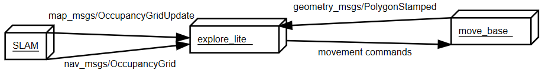

High Level Algorithms¶
SLAM using gmapping¶
Gmapping is a SLAM algorithm that can be used to generate a global map that can be used in autonomous navigation. It requires a horizontally fixed laser range finder(lidar) and subscribes to the /scan topic. Further it subscribes to /tf needing to know the transform between the lidar and the base_link and between the base_link and odom. In turn, it provides the transform between odom and the map frame to /tf and publishes the constantly updated map under the /map topic.
Run¶
To create a map launch your helmoro in the desired environment (in gazebo or in real life)
Open up a new terminal and enter
While this node is running drive around with your helmoro in the environment. This node will create a occupancy map using SLAM. When you are done driving around leave all the terminals running, open up a new one and enter
This will create a your_map.pgm and your_map.yaml file at the location you defined. If you wish to use this map in navstack move it to the folder from which you call the maps and change the name of the map.yaml file in move_base.launch to your_map.yaml.
If you want to launch all commands together, you can just type
However, calling this custom launch file, you still need to run
when you're finished.
Configuration¶
Gmapping can be customized using parameters. The launch file gmapping.launch, which is saved under helmoro_description/launch/gmapping calls the gmapping node with customized parameters for Helmoro. helmoro_gmapping.launch in turn calls gmapping.launch together with helmoro.launch.
Limitations:¶
The gmapping algorithm only takes uses laser scan data coming from a horizontally mounted lidar. The RGB-D camera cannot be used for this task. Therefore, only objects that cross the "detection-plane" height of the lidar will be noticed. Also, highly reflective or transparent objects will not be detected properly using a lidar and will therefore not be written into the map.
Troubleshooting¶
A problem often encountered when mapping feature poor environments such as long hallways, is that when driving the robot forward, it can skip back to the place it was before on the map since to gmapping, the features look alike. For this problem, it is advised to tweak the parameters so that gmapping puts more trust into the odometry information it gets. Have a look at Bad maps produced by gmapping and Repeated sideways jumps on ROS answer for further discussion on the topic.
For further information on the usage of gmapping head to: gmapping ROS Wiki and slam_gmapping Tutorial
Autonomous Navigation using the Navigation Stack¶
72-autonomous-navigation-using-the-navigation-stack For a good overview and detailed description head to: Navigation Stack ROS wiki and Robot Setup
Concept¶
The following image shows a conceptual flowchart of the Navigation Stack. Note that the stack subscribes to exactly the blue topics that are provided by Helmoro.

In short, a global goal (/move_base_simple/goal) can be sent to the navigation stack, which is interpreted by the global_planner. Taking into account information from the local and global costmap it will generate a path from the robot's current position to the global goal. This path is then interpreted by the local planner, which in turn publishes the movement command for the robot.
move_base¶
move_base controls the different packages needed for autonomous navigation including a global and a local_costmap depending on costmap_2d, a global and a local_planner and recovery behaviors. All the used packages for the navigation stack can be individually tuned using parameters. Refer to the links of the individual packages for further information.
map_server¶
If you want to hand over a global map to the Navigation Stack (created by gmapping), you can use the map_server by handing over the yaml file for the map you want to hand over. Note that the yaml file describes the location of the pgm file of your map.
AMCL¶
AMCL, short for Adaptive Monte Carlo Localization, takes in laser scans, odometry, tf and map provided by the map server and computes a pose estimate of the base_link w.r.t. the global map frame and publishes it onto amcl_pose and /tf topics. To do so, AMCL constantly compares information from the robot's odometry and the alignment of the laser scans with the global map. AMCL can be finetuned using parameters. For further information on AMCL, head to the AMCL ROS wiki.
Configuration for Helmoro¶
The internal package helmoro_2dnav includes all the launch and parameter files used to for the specific application of the navigation stack to Helmoro.
The main launch file is move_base.launch, which calls all the actions needed and reads in the parameters specified in the different parameter files.
It calls move_base:
as well as the map_server:
<node name="map_server" pkg="map_server" type="map_server" args="$(find helmoro_2dnav)/helmoro_maps/mymap.yaml"/>
and AMCL:
Further, the parameters used for Helmoro are specified in the following files:
- common_costmap_params: parameters for both local and global costmap
- local_costmap_params: parameters for the local costmap
- global_costmap_params: parameters for the global costmap
- base_local_planner_params: parameters for the local planner
- global_planner_params: parameters for the global planner
In addition, all maps used for the map server are saved in the folder helmoro_2dnav/helmoro_maps.
Run¶
To run the navigation stack either set the value in the helmoro.launch file of 'use_nav_stack' to 'true' or type the following command into your terminal: you can either call helmoro.launch and move_base.launch seperately:
or simply launch nav_helmoro.launch, which calls both above launch files together.
The navigation stack is easiest used in combination with RViZ where the different maps and paths of Helmoro's world can be visualized. You can send a goal using the 2D Nav Goal button or place Helmoro at a distinct position in your map with the 2D Pose Estimate button.
The settings to visualize the aspects of the navigation stack are saved in the default rviz config file under helmoro_description/rviz/rviz_config.rviz
Head to Nav Stack with RViz for further documentation on this topic.
You can also send goals and pose estimates directly in the terminal by typing:
or
and tab-complete respectively.
If you repeatedly want to start Helmoro from the same position in your map and only want to go through the task of setting a matching map position for Helmoro in RViZ once, it's a good practise to first listen to the topic /intitialpose (rostopic echo /initialpose) in order to acquire the coordinates and to be able to set them through the terminal for the next start.
Another option to specify the start position of Helmoro is to specify it in the parameters initial_pose_x, initial_pose_y and initial_pose_a for AMCL. Currently, a launch file called amcl_helmoro.launch is called in move_base.launch as described in configuration for helmoro.
In order to let Helmoro localize itself, you can use the /global_localization service offered by AMCL by typing:
If Helmoro gets stuck and can't find a way out because of so called ghost objects (objects marked that are actually free space), try the following rosservice call:
For reference on this call, have a look at the following ROS Answers
Tuning the Navigation Stack¶
As mentioned above, the each functionality of the navigation stack can be finetuned using parameters. In the following, some suggestions and findings, that where made when tuning nav stack for Helmoro, on how to tune the parameters for the different functionalities are given. In addition, some useful links for tuning and troubleshooting the navigation stack are provided at the end of this subsection.
TIP: A lot of the parameters of the navigation stack are dynamically tunable. When you run
while your robot is running you can change many values dynamically in runtime.
Costmaps in General¶
Both the local costmap and the global costmaps are two map types derived from costmap_2d, which provides a configurable structure that maintains information about where the robot should navigate in the form of an occupancy grid. The difference between the two is that the global costmap is seeded with a user-generated static map (map server) and the local costmap has a specified width and height which keeps the robot centered inside it.
The costmaps can be configured using plugins for the different layers. The most commonly used layers are the static_layer (for the global costmap), the obstacle layer (tracks obstacles), inflation layer (lays inflation around obstacles). Obviously, the static layer should only be present in the global costmap. The local costmap in turn should have the parameter "rolling window" set to true. Have a look at global_costmap_params and local_costmap_params.
common_costmap_params¶
important obstacle_layer parameters:
max_obstacle_height): The maximum height of any obstacle to be inserted into the costmap in meters. This parameter should be set to be slightly higher than the height of your robot. Can be over-ridden on a per-sensor basis.obstacle_range: Maximum distance from the robot at which an obstacle will be inserted into the cost map in meters. Can be over-ridden on a per-sensor basis. Have a look at the sensor specs to define this parameter.raytrace_range: The default range in meters at which to raytrace out obstacles from the map using sensor data. Set this parameter to a slightly higher value than obstacle_range to avoid ghost objects. Have a look at the sensor specs to define this parameter.
Further, you can define several sensor sources that are taken into account such as our rgb-d camera and lidar which in turn are configurable. Note that is important to set the parameter inf_is_valid to true for our lidar. The rplidar returns inf for invalid measurements for example when there is no object where the laser beam can reflect on in its range. This parameter will help raytrace objects from the costmap even if the laser beam is not reflected properly in a certain direction.
important inflation_layer parameters:
inflation_radius: radius in meters to which the map inflates obstacle cost values. This parameter should be bigger that the circumscribed radius of the robot in order to guarantee robust navigation.cost_scaling_factor: rate ad which the exponential decay function of cost values away from an object drops. A higher value for this parameter will result in decreased cost values.
base_local_planner_params¶
Velocity and Acceleration:
It is important to set the minimal velocities to a value that lets Helmoro overcome friction and the maximal velocities so that Helmoro is able to reach them.
The easiest way to find the mathcing values for these parameters is to start the helmoro.launch file (without the navigation stack) and send a /cmd_vel to Helmoro directly through the terminal using
and tab-complete. Simultaneously rqt_plot can be started and the desired topics can be displayed so that one can easily see how well Helmoro tracks a given /cmd_vel. For linear motion you would want to display /odom/twist/twist/linear/x and /cmd_vel/linear/x, for angular motion you would want to display /odom/twist/twist/angular/z and /cmd_vel/angular/z.
Goal distance tolerance:
xy_goal_tolerance: Tolerance in meters in x and y direction for a goal to be considered reached.yaw_goal_tolerance: Tolerance in radians in yaw orientation for a goal to be considered reached.
Setting these parameters, the minimal linear and angular velocities mentioned above should be considered. A robot with a higher minimal velocity should be given a higher tolerance on its goal.
Forward simulation:
sim_time: Defines the amount of time to forward simulate trajectories in seconds. This largely influences the behaviour of the robot especially when its close to reaching its goal. From experience, it is advised to keep this parameter between 1 and 2 seconds for Helmoro. The longer the value forsim_time, the higher the computational load becomes. However, settingsim_timetoo low, can result in limited performance especially when the robot needs to pass a narrow path. Another point is that forwardsimulated trajectories simulated are scored by their endpoints. Therefore, thesim_timeparameter can have a large effect on how the robot behaves especially when its close to reaching its goal. For example ifmin_vel_xis set to 0.1m/s andsim_timeis set to 5s, any trajectory with positive x velocity will move at least 0.5 meters forward. If now the goal tolerance is too low, in place rotations will score more favourably than a simple linear motion. A reasonable suggestion that can be looked up on this ROS wiki page about tuning in section 3, is to set the parameters in the following fashion:min_vel_x * sim_time < 2 * xy_goal_tolerancemin_in_place_vel_theta * sim_time < 2 * yaw_goal_tolerance
Bear in mind that a lot of parameters depend on each other. For example when lowering your value for sim_time, you may want to lower your value for path_distance_bias a little.
global_planner_params¶
The three most important parameters that influence the fashion how the global path is planned obtaining costmap information are lethal_cost, neutral_cost and cost_factor. These parameters have been left to default for Helmoro. For your reference, head to Navguide for a good explanation on these parameters.
Useful Links¶
In order to get an idea on how to tune parameters for the navigation stack, have a look at the following links:
Guides:
Examples:
Troubleshooting:
Issues concerning the Navigation Stack¶
The Issues can be found under the Issues of the repository
Autonomous SLAM using explore_lite¶
Concept¶
Helmoro can do the task of building a map autonomously using a ROS package called explore_lite.This package provides greedy frontier-based exploration. When node is running, robot will greedily explore its environment until no frontiers could be found. The following picture shows an intuitive overview of how the package works.

explore_lite sends different goal positions to the navigation stack considering the continuously updated map from gmapping or the costmap from move_base. Note that you can use both. Depending on your environment you may achieve better results with either SLAM map or costmap published by move_base. Advantage of move_base costmap is the inflation which helps to deal with some very small unexplorable frontiers. When you are using a raw map produced by SLAM you should set the min_frontier_size parameter to some reasonable number to deal with the small frontiers.
Run¶
In order to Run the autonomous mapping task, run Helmoro with the Navigation Stack using gmapping instead of amcl. Also, make sure not to provide a map using the map_server. To do so, you can call the custom launch file for Helmoro called explore_helmoro.launch
Note that this launch file includes an argument use_movebase_costmap. If set to false, the launch file will call expore.launch, the launch file which will make explorelite use map information from gmapping for planning. If set to true, the launch file will call expore_costmap.launch, the launch file which will make explore_lite use map information from the move_base costmap for planning. Both explore.launch and explore costmap.launch are saved under /helmorodescription/launch/explore_lite/ and hold custom parameters for the usage of explore_lite with Helmoro. If using explore_costmap.launch, it is very important to set the parameter track_unknown_space to true in common_costmap_params.yaml for the navigation stack.
Head to explore_lite wiki for futher information. For an example and some helpful instructions, head to Husarion Docs.